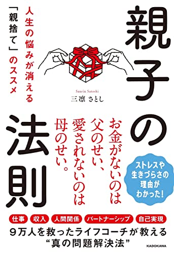

親子の法則
📕 ちーちゃん 紹介本
親子の法則 人生の悩みが消える「親捨て」のススメ
RECOMMENDED BY
ちーちゃん
定期的に受けているコーチングで、ミスを過剰に気にして落ち込みやすい話から「もしかして親子関係？」となったのがきっかけで手に取った一冊。
読み進めるうちに、自分の子ども時代を「悪かったことも、よかったことも」両方振り返れるのがよかったそう。巻末に深掘りワークがついていて、親への見方をニュートラルに戻して俯瞰できるようになる。「短期的にすぐ変わるものじゃないから、定期的に読み返していく」とのこと📖
「親捨て」＝親を嫌いになることではなく、親に対する偏った見方をニュートラルに戻すワーク。9万人を支援したライフコーチが、仕事・収入・人間関係・自己実現の悩みの根っこにある「親ブロック」の外し方を説く。上司との関係がうまくいかない、自分を過剰に責めてしまう──そんな人の入口にも。